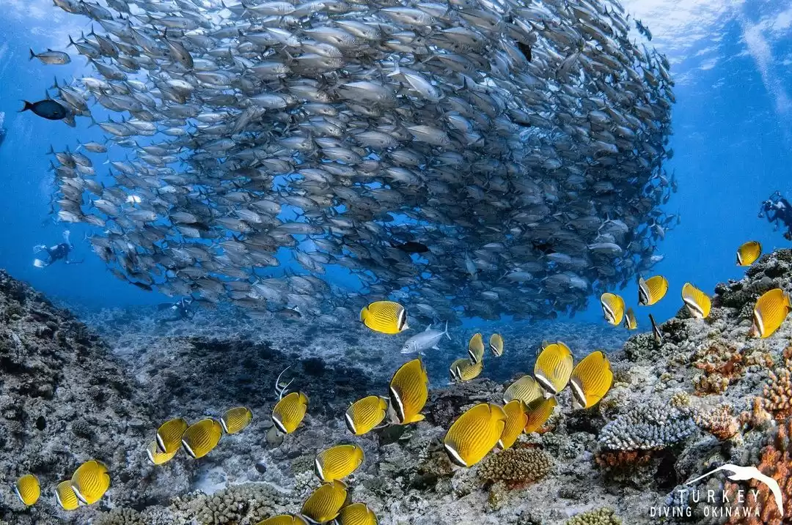

Dive Sites & Wrecks
Explore the underwater heritage sites around Sri Lanka.
Interactive Map of Key Locations
Use this map to see the locations of famous shipwrecks and dive sites.
Featured Wrecks

HMS Hermes
The world's first purpose-built aircraft carrier, sunk off the coast of Batticaloa during World War II. It's a world-renowned dive site for technical divers.

SS Conch
A British steam tanker that sank in 1903 near Galle. It lies in relatively shallow water and is a popular site for recreational divers.